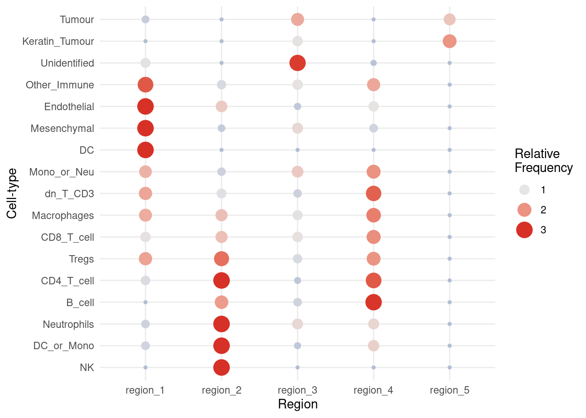

# load required packages
library(lisaClust)
library(spicyR)
library(ggplot2)
library(SingleCellExperiment)
library(SpatialDatasets)6 Cellular niches
Steps:
- Association between survival and cell proportion (spicyR::colTest)
- Association between survival and localisation (spicyR)
- Association between survival and region proportions (lisaClust)
- Association between survival and Kontextual features (Kontextual)
- Association between survival and cell-cell interactions (SpatioMark)
6.1 lisaClust
Clustering local indicators of spatial association (LISA) functions is a methodology for identifying consistent spatial organisation of multiple cell-types in an unsupervised way. This can be used to enable the characterization of interactions between multiple cell-types simultaneously and can complement traditional pairwise analysis. In our implementation our LISA curves are a localised summary of an L-function from a Poisson point process model. Our framework lisaClust can be used to provide a high-level summary of cell-type colocalization in high-parameter spatial cytometry data, facilitating the identification of distinct tissue compartments or identification of complex cellular microenvironments.
6.2 Why look at cellular niches?
To illustrate our lisaClust framework, we consider a very simple toy example where two cell-types are completely separated spatially. We simulate data for two different images.
set.seed(51773)
x <- round(c(
runif(200), runif(200) + 1, runif(200) + 2, runif(200) + 3,
runif(200) + 3, runif(200) + 2, runif(200) + 1, runif(200)
), 4) * 100
y <- round(c(
runif(200), runif(200) + 1, runif(200) + 2, runif(200) + 3,
runif(200), runif(200) + 1, runif(200) + 2, runif(200) + 3
), 4) * 100
cellType <- factor(paste("c", rep(rep(c(1:2), rep(200, 2)), 4), sep = ""))
imageID <- rep(c("s1", "s2"), c(800, 800))
cells <- data.frame(x, y, cellType, imageID)
ggplot(cells, aes(x, y, colour = cellType)) +
geom_point() +
facet_wrap(~imageID) +
theme_minimal()6.2.1 Create Single Cell Experiment object
First we store our data in a SingleCellExperiment object.
SCE <- SingleCellExperiment(colData = cells)
SCEclass: SingleCellExperiment
dim: 0 1600
metadata(0):
assays(0):
rownames: NULL
rowData names(0):
colnames: NULL
colData names(4): x y cellType imageID
reducedDimNames(0):
mainExpName: NULL
altExpNames(0):6.2.2 Running lisaCLust
We can then use the convenience function lisaClust to simultaneously calculate local indicators of spatial association (LISA) functions and perform k-means clustering. The number of clusters can be specified with the k = parameter. In the example below, we’ve chosen k = 2, resulting in a total of 2 clusters. The cell type column can be specified using the cellType = argument. By default, lisaClust uses the column named cellType.
The clusters identified by lisaClust are stored in colData of the SingleCellExperiment object as a new column called regions.
SCE <- lisaClust(SCE, k = 2)Generating local L-curves.colData(SCE) |> head()DataFrame with 6 rows and 5 columns
x y cellType imageID region
<numeric> <numeric> <factor> <character> <character>
1 36.72 38.58 c1 s1 region_2
2 61.38 41.29 c1 s1 region_2
3 33.59 80.98 c1 s1 region_2
4 50.17 64.91 c1 s1 region_2
5 82.93 35.60 c1 s1 region_2
6 83.13 2.69 c1 s1 region_26.2.3 Plot identified regions
lisaClust also provides the convenient hatchingPlot function to visualise the different regions that have been demarcated by the clustering. hatchingPlot outputs a ggplot object where the regions are marked by different hatching patterns. In a real biological dataset, this allows us to plot both regions and cell-types on the same visualization.
In the example below, we can visualise our stimulated data where our 2 cell types have been separated neatly into 2 distinct regions based on which cell type each region is dominated by. region_2 is dominated by the red cell type c1, and region_1 is dominated by the blue cell type c2.
hatchingPlot(SCE, useImages = c("s1", "s2"))Concave windows are temperamental. Try choosing values of window.length > and < 1 if you have problems.
Concave windows are temperamental. Try choosing values of window.length > and < 1 if you have problems.6.2.4 Using other clustering methods.
While the lisaClust function is convenient, we have not implemented an exhaustive suite of clustering methods as it is very easy to do this yourself. There are just two simple steps.
6.2.5 Generate LISA curves
We can calculate local indicators of spatial association (LISA) functions using the lisa function. Here the LISA curves are a localised summary of an L-function from a Poisson point process model. The radii that will be calculated over can be set with Rs.
lisaCurves <- lisa(SCE, Rs = c(20, 50, 100))Generating local L-curves.head(lisaCurves) 20_c1 20_c2 50_c1 50_c2 100_c1 100_c2
cell_1 5.556700 -2.764143 15.631209 -6.910357 11.733097 -9.198914
cell_2 4.833149 -2.764143 13.940407 -6.910357 9.532662 -8.543440
cell_3 5.918476 -2.764143 9.008588 -6.910357 9.157887 -7.813862
cell_4 4.109597 -2.764143 11.907928 -6.910357 8.404425 -8.140036
cell_5 3.024270 -2.764143 10.159278 -6.910357 9.006286 -8.283564
cell_6 7.986742 -2.764143 8.675070 -6.910357 12.859615 -13.8207146.2.6 Perform some clustering
The LISA curves can then be used to cluster the cells. Here we use k-means clustering. However, other clustering methods like SOM could also be used. We can store these cell clusters or cell “regions” in our SingleCellExperiment object.
# Custom clustering algorithm
kM <- kmeans(lisaCurves, 2)
# Storing clusters into colData
colData(SCE)$custom_region <- paste("region", kM$cluster, sep = "_")
colData(SCE) |> head()DataFrame with 6 rows and 6 columns
x y cellType imageID region custom_region
<numeric> <numeric> <factor> <character> <character> <character>
1 36.72 38.58 c1 s1 region_2 region_2
2 61.38 41.29 c1 s1 region_2 region_2
3 33.59 80.98 c1 s1 region_2 region_2
4 50.17 64.91 c1 s1 region_2 region_2
5 82.93 35.60 c1 s1 region_2 region_2
6 83.13 2.69 c1 s1 region_2 region_26.2.7 Case study: Keren
We will start by reading in the data from the SpatialDatasets package as a SingleCellExperiment object. Here the data is in a format consistent with that outputted by CellProfiler.
kerenSPE <- SpatialDatasets::spe_Keren_2018()Cannot connect to ExperimentHub server, using 'localHub=TRUE' insteadWarning: download failed
web resource path: 'https://experimenthub.bioconductor.org/metadata/experimenthub.sqlite3'
local file path: '/enna/users/ststaff/alexq/.cache/R/ExperimentHub/file25c67b67b45560'
reason: Internal Server Error (HTTP 500).Warning: bfcdownload() failed
rid: BFC1
file: 'https://experimenthub.bioconductor.org/metadata/experimenthub.sqlite3'
reason: download failedWarning: Could not check database for updates.
Database source currently unreachable.
This should only be a temporary interruption.
Using previously cached version.see ?SpatialDatasets and browseVignettes('SpatialDatasets') for documentationloading from cache6.2.7.1 Generate LISA curves
This data includes annotation of the cell-types of each cell. Hence, we can move directly to performing k-means clustering on the local indicators of spatial association (LISA) functions using the lisaClust function, remembering to specify the imageID, cellType, and spatialCoords columns in colData. For the purpose of demonstration, we will be using only images 5 and 6 of the kerenSPE dataset.
kerenSPE <- kerenSPE[,kerenSPE$imageID %in% c("5", "6")]
kerenSPE <- lisaClust(kerenSPE,
k = 5
)Generating local L-curves.These regions are stored in colData and can be extracted.
colData(kerenSPE)[, c("imageID", "region")] |>
head(20)DataFrame with 20 rows and 2 columns
imageID region
<character> <character>
21154 5 region_4
21155 5 region_4
21156 5 region_4
21157 5 region_3
21158 5 region_3
... ... ...
21169 5 region_3
21170 5 region_3
21171 5 region_1
21172 5 region_3
21173 5 region_16.2.7.2 Examine cell type enrichment
lisaClust also provides a convenient function, regionMap, for examining which cell types are located in which regions. In this example, we use this to check which cell types appear more frequently in each region than expected by chance.
Here, we clearly see that healthy epithelial and mesenchymal tissue are highly concentrated in region 1, immune cells are concentrated in regions 2 and 4, whilst tumour cells are concentrated in region 3.
We can further segregate these cells by increasing the number of clusters, i.e., increasing the parameter k = in the lisaClust() function. For the purposes of demonstration, let’s take a look at the hatchingPlot of these regions.
regionMap(kerenSPE,
type = "bubble"
)
6.2.7.3 Plot identified regions
Finally, we can use hatchingPlot to construct a ggplot object where the regions are marked by different hatching patterns. This allows us to visualize the 5 regions and 17 cell-types simultaneously.
hatchingPlot(kerenSPE, nbp = 300)Concave windows are temperamental. Try choosing values of window.length > and < 1 if you have problems.Warning in split.default(x = seq_len(nrow(x)), f = f, drop = drop, ...): data
length is not a multiple of split variable
Warning in split.default(x = seq_len(nrow(x)), f = f, drop = drop, ...): data
length is not a multiple of split variable